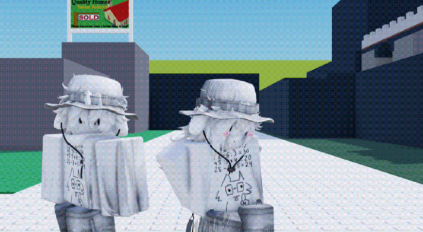
наша первая совместная гифка, помнишь её? её сделал солвик, школьник с сервера, ну ты поняла)
я тут немножко постарался, так что листай вниз, ладно? 👉👈
математика ещё никогда не была такой простой

наша первая совместная гифка, помнишь её? её сделал солвик, школьник с сервера, ну ты поняла)
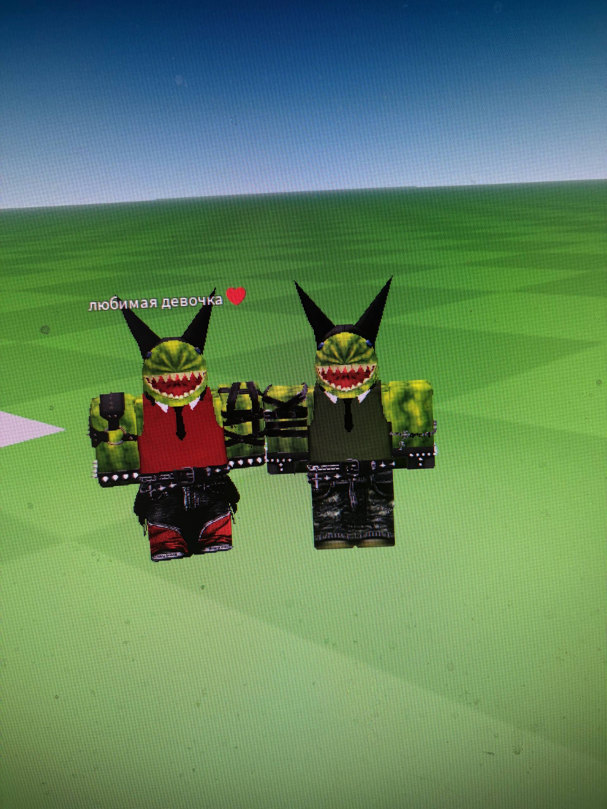
помнишь наши скинчики в арбузиках? очень классно :)
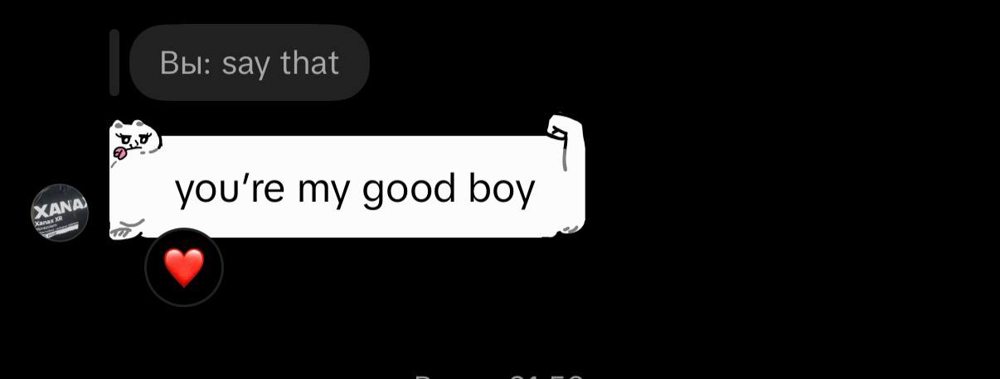
это я заскринил потомуштооо.. ну в общем да..
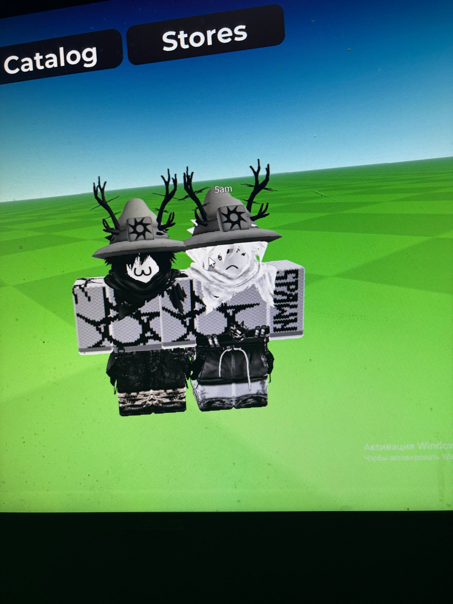
а это наши первые совместные скины!!! они на самом деле очень классные, мне даже сейчас очень-очень нравятся. спасибо тебе за то, что ты такая ахуенная в этом деле
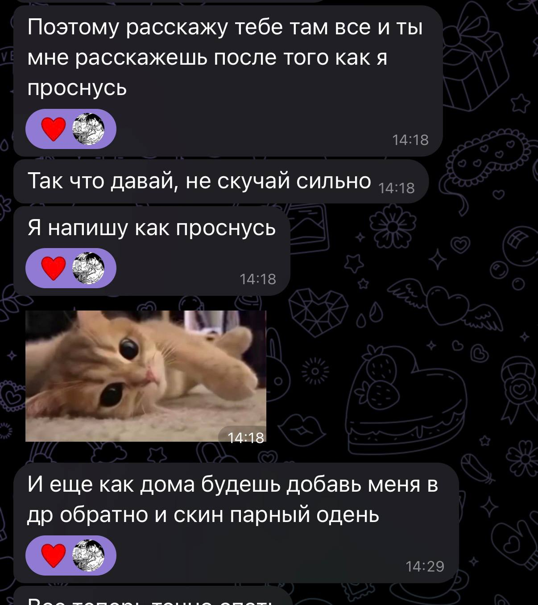
я плакал, когда скринил это. я люблю тебя. ❤️🥺
помнишь, как сидели с войсом первые дни, боялись говорить что-то милое? на фоне киберпанка, где люси и дэвид целуются, я спрашивал, стесняясь: мы ли это? ты отвечала — возможно) я прыгал от радости, я очень был рад это услышать и проводить с тобой время. ты мой психотерапевт, поля :)
помнишь, как сидели с яриком ( яриком ) и немножко с него смеялись? он такой глупый моментами и смешной, но всё же хороший парень, я думаю. он даже пытался учить меня чему-то в отношениях с тобой, но я как-то не слушал особо) он говорил, что я пример для него, как надо относиться к девушке.. не знаю, правда ли это. всё же я плох. ну ладна, давай дальше
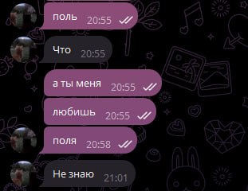
😭💔🥺❤️ ахах, были невероятные эмоциональные качели, но я рад, что мы через это прошли, и мы справимся со всеми трудностями. я в нас верю. я верю в тебя, всегда буду верить. мы заведём котёнка и уедем подальше от всех! ❤️
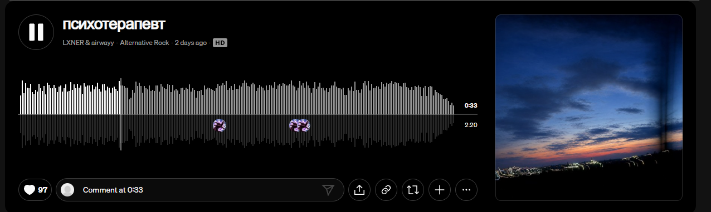
ты у меня ассоциируешься с этими песнями. на первой невероятно радостный и объёмный звук, вызывающий у меня эффект любви. так ассоциируется у меня наша любовь — объёмная, добрая и прекрасная, пусть и с грустью.
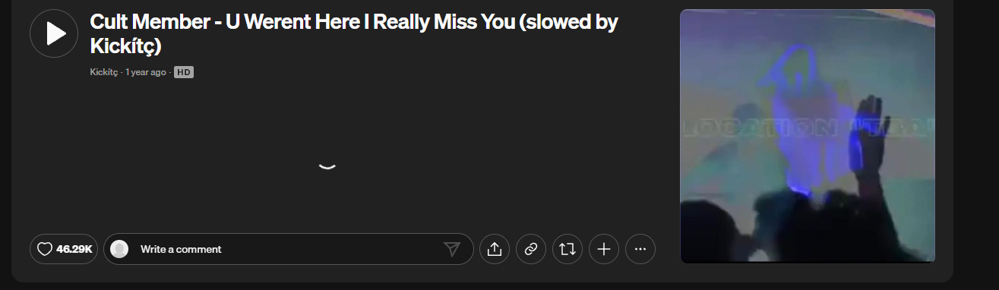
вторая песня так же прекрасна, фармящая ауру, спокойная и вайбовая. чуть есть схожесть с бличем)) и рукиеей)) хипхихи
щас узнаешь!!! ♫ ✧ ♡
«Тот, кто любит, должен разделять участь того, кого он любит»Михаил Булгаков, «Мастер и Маргарита»
«Ты — моё самое великое приключение»Боб Парр
«Любовь сильнее смерти и страха смерти»Иван Тургенев, «Отцы и дети»
«Любовь — это когда ты в ком-то находишь себя»Фридрих Ницше
«Ты покорил меня с первого „привет“»Дороти Бойд, «Джерри Магуайер»
вот фоточки, которые мне запомнились!!
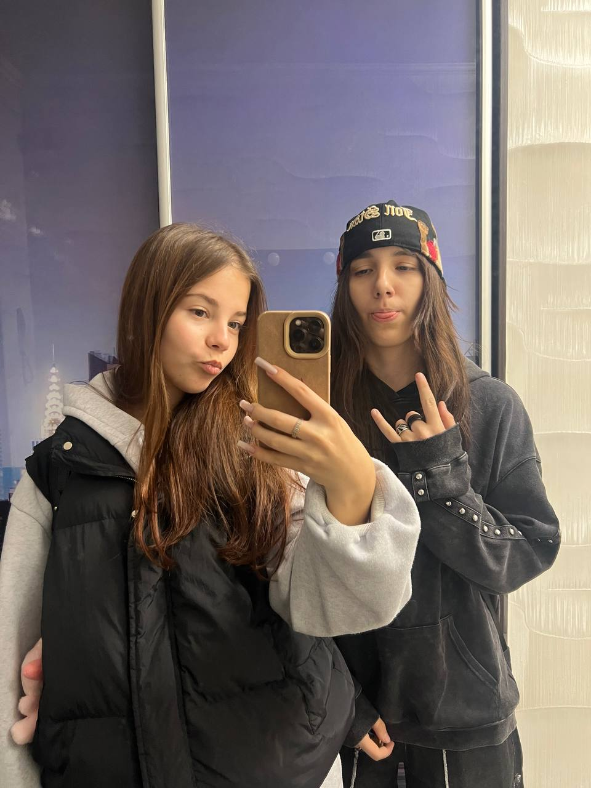
ты на этой фоточке такая смешная, но в хорошем смысле!! такая милая и вайбовенькая. я бы тебя зацеловал и заобнимал
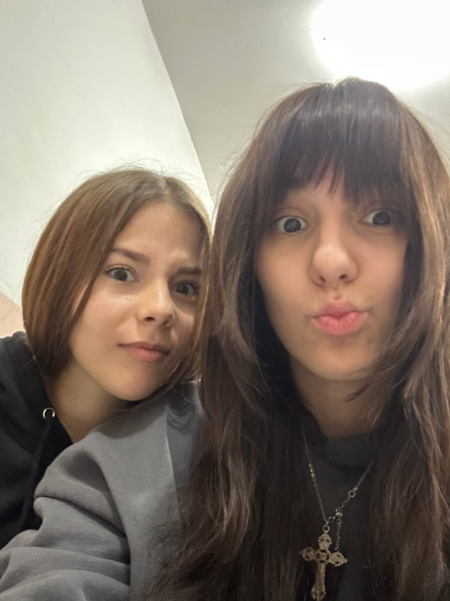
ты на этой просто секс... у меня текут слюни.
мы ссорились, и большинство фоток утекло.. но я помню почти все, почти все ракурсы. ты просто всегда шикарна и идеальна. листай вниз, котёнок ♡
и не было ни одного, который мне не понравился ♡
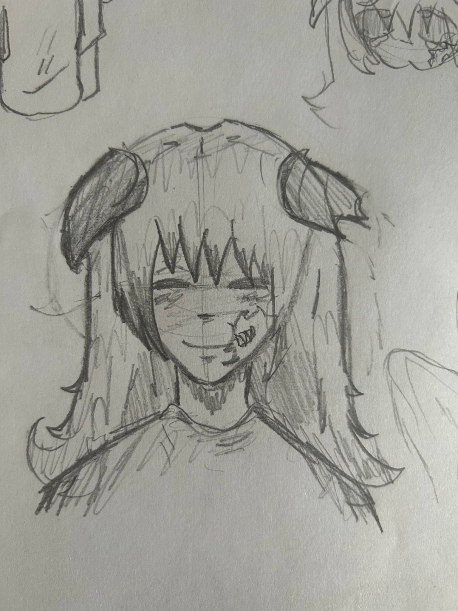
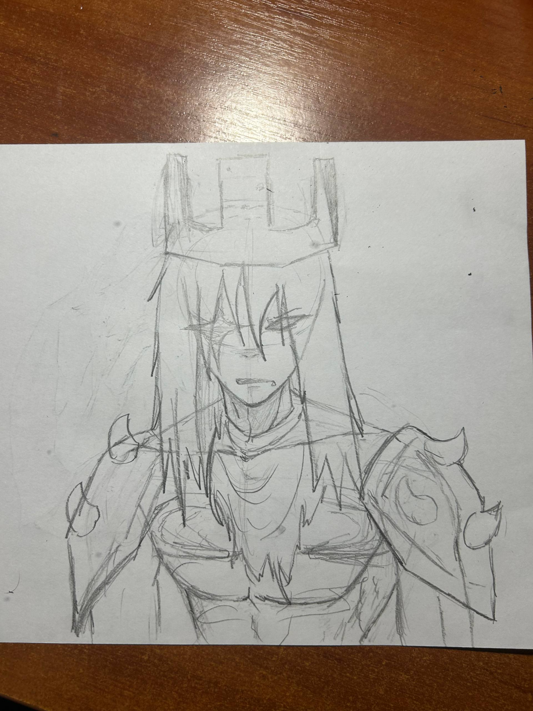
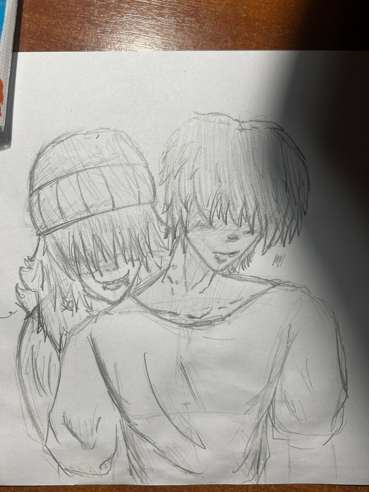
а на этой мы вместе с тобой!! ты ахуенно нас рисуешь, особенно меня, я не такой красивый в жизни)
все милыы и добрые видео, которые ты мне скидываешь, порой чуть грустные, порой очень весёлые и порой пиздецовые. кстати, я говорил, что тебя люблю!? ❤️
мне даже не обязательно, чтобы происходило что-то особенное. я могу просто сидеть с тобой, слушать тебя или заниматься своими делами рядом, и мне уже хорошо. ты делаешь мои обычные дни намного приятнее, полечка ♡
спасибо, что делишься со мной своими мыслями, показываешь свои рисунки и отправляешь мне всякие видео. мне правда интересно всё, что связано с тобой. я хочу и дальше узнавать тебя, поддерживать тебя и делать так, чтобы рядом со мной тебе было спокойно и хорошо.
подсказка: самое главное чувство, которое начинается на «л» и живёт в сердечке ♡
хмм, попробуй ещё раз, солнышко 🥺
и последнее...
Спасибо, что ты — это ты.
Надеюсь, ты сейчас улыбаешься ♡